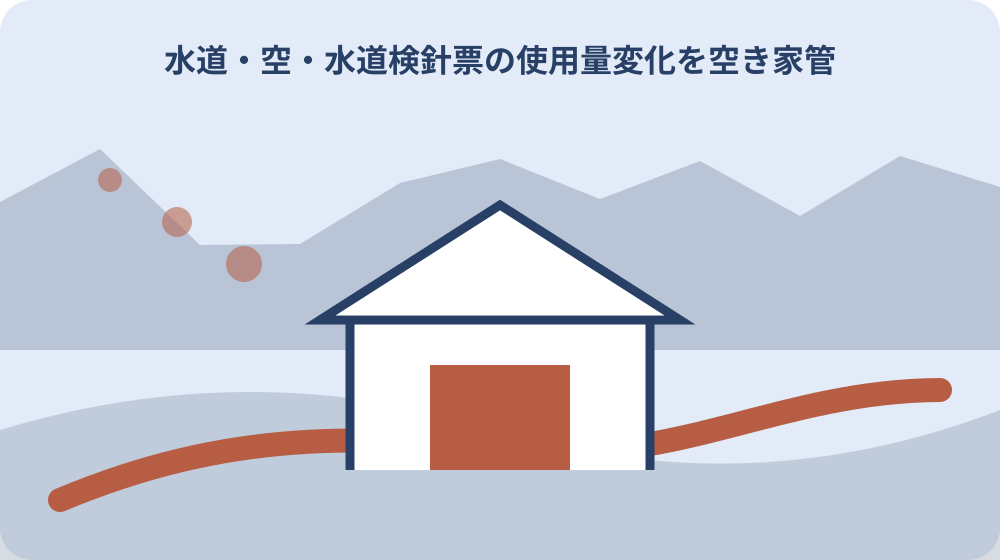
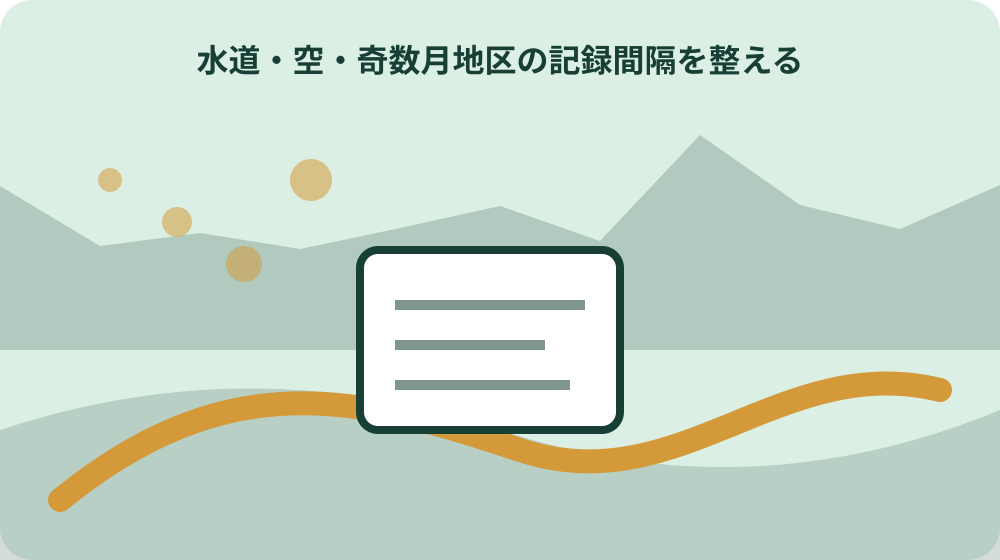

先に結論を確認する
この記事の答え：直ちには断定できません。清掃や庭の散水などの使用を確認し、全ての蛇口を閉めた状態でメーターのパイロットを見ます。
森町で最初に照合する条件：所在地の地区と奇数月・偶数月の検針区分を最初に確定する
検針月を所在地から確定する
検針月を所在地から確定するに関して、森町の上水道と公営簡易水道は検針と料金納入が2か月に一度である。検針月を所在地から確定するを確認する際、検針月を所在地から確定するときは、公式資料の表記をそのまま控え、似た名称や数字を家族の記憶だけで同一と決めません。検針月を所在地から確定するの記録では、資料名と確認日も添えると、後日の更新と区別できます。
検針月を所在地から確定するを確認する際、転居などで使用を開始・中止するときは届出が必要である。検針月を所在地から確定するの記録では、この情報を検針月を所在地から確定する資料へ移す場合は、対象、日付、場所、名義など本文で確認できる項目だけを書きます。検針月を所在地から確定するを家族へ伝える前に、分からない欄は空白で消さず、確認先を付けた未確認欄として残します。
検針月を所在地から確定するの記録では、森町へ検針月を所在地から確定する内容を尋ねる前に、手元の資料で一致した点と一致しない点を二列にします。検針月を所在地から確定するを家族へ伝える前に、「森町の上水道と公営簡易水道は検針と料金納入が2か月に一度である」という案内のどこを読んだかを示せば、今回の対象に合う回答を得やすくなります。
検針月を所在地から確定するを家族へ伝える前に、検針月を所在地から確定する結果には、回答日、担当窓口、参照資料、次に必要な行動を記録します。検針月を所在地から確定するの見直しでは、本人の意思や家族の予定は公的事実と別欄に置き、町の案内のように見える書き方を避けます。
検針月を所在地から確定するの見直しでは、検針月を所在地から確定する記録を家族へ渡す際は、採用した資料だけでなく未確認事項も共有します。検針月を所在地から確定するに関して、転居などで使用を開始・中止するときは届出が必要であるという条件が変わった場合も、どの行から見直せばよいか判断できます。
前回指針と今回指針の差を読む
前回指針と今回指針の差を読むに関して、大鳥居・森・一宮地区と公営簡易水道は奇数月検針である。前回指針と今回指針の差を読むを確認する際、前回指針と今回指針の差を読むときは、公式資料の表記をそのまま控え、似た名称や数字を家族の記憶だけで同一と決めません。前回指針と今回指針の差を読むの記録では、資料名と確認日も添えると、後日の更新と区別できます。
前回指針と今回指針の差を読むを確認する際、料金の納入方法には口座振替と納付書がある。前回指針と今回指針の差を読むの記録では、この情報を前回指針と今回指針の差を読む資料へ移す場合は、対象、日付、場所、名義など本文で確認できる項目だけを書きます。前回指針と今回指針の差を読むを家族へ伝える前に、分からない欄は空白で消さず、確認先を付けた未確認欄として残します。
前回指針と今回指針の差を読むの記録では、森町へ前回指針と今回指針の差を読む内容を尋ねる前に、手元の資料で一致した点と一致しない点を二列にします。前回指針と今回指針の差を読むを家族へ伝える前に、「大鳥居・森・一宮地区と公営簡易水道は奇数月検針である」という案内のどこを読んだかを示せば、今回の対象に合う回答を得やすくなります。
前回指針と今回指針の差を読むを家族へ伝える前に、前回指針と今回指針の差を読む結果には、回答日、担当窓口、参照資料、次に必要な行動を記録します。前回指針と今回指針の差を読むの見直しでは、本人の意思や家族の予定は公的事実と別欄に置き、町の案内のように見える書き方を避けます。
前回指針と今回指針の差を読むの見直しでは、前回指針と今回指針の差を読む記録を家族へ渡す際は、採用した資料だけでなく未確認事項も共有します。前回指針と今回指針の差を読むに関して、料金の納入方法には口座振替と納付書があるという条件が変わった場合も、どの行から見直せばよいか判断できます。
無人開始日と最後の使用を結ぶ
無人開始日と最後の使用を結ぶに関して、森町の飯田・園田地区の上水道は、偶数月に検針と料金納入が行われる。無人開始日と最後の使用を結ぶを確認する際、無人開始日と最後の使用を結ぶときは、公式資料の表記をそのまま控え、似た名称や数字を家族の記憶だけで同一と決めません。無人開始日と最後の使用を結ぶの記録では、資料名と確認日も添えると、後日の更新と区別できます。
無人開始日と最後の使用を結ぶを確認する際、使用水量は今回指針と前回指針の差で読む。無人開始日と最後の使用を結ぶの記録では、この情報を無人開始日と最後の使用を結ぶ資料へ移す場合は、対象、日付、場所、名義など本文で確認できる項目だけを書きます。無人開始日と最後の使用を結ぶを家族へ伝える前に、分からない欄は空白で消さず、確認先を付けた未確認欄として残します。
無人開始日と最後の使用を結ぶの記録では、森町へ無人開始日と最後の使用を結ぶ内容を尋ねる前に、手元の資料で一致した点と一致しない点を二列にします。無人開始日と最後の使用を結ぶを家族へ伝える前に、「森町の飯田・園田地区の上水道は、偶数月に検針と料金納入が行われる」という案内のどこを読んだかを示せば、今回の対象に合う回答を得やすくなります。
無人開始日と最後の使用を結ぶを家族へ伝える前に、無人開始日と最後の使用を結ぶ結果には、回答日、担当窓口、参照資料、次に必要な行動を記録します。無人開始日と最後の使用を結ぶの見直しでは、本人の意思や家族の予定は公的事実と別欄に置き、町の案内のように見える書き方を避けます。
無人開始日と最後の使用を結ぶの見直しでは、無人開始日と最後の使用を結ぶ記録を家族へ渡す際は、採用した資料だけでなく未確認事項も共有します。無人開始日と最後の使用を結ぶに関して、使用水量は今回指針と前回指針の差で読むという条件が変わった場合も、どの行から見直せばよいか判断できます。

元栓とメーターボックスの位置を残す
元栓とメーターボックスの位置を残すに関して、使用水量のお知らせは検針値を確認する資料になる。元栓とメーターボックスの位置を残すを確認する際、元栓とメーターボックスの位置を残すときは、公式資料の表記をそのまま控え、似た名称や数字を家族の記憶だけで同一と決めません。元栓とメーターボックスの位置を残すの記録では、資料名と確認日も添えると、後日の更新と区別できます。
元栓とメーターボックスの位置を残すを確認する際、空き家でも元栓を閉めていなければ通水状態が続く。元栓とメーターボックスの位置を残すの記録では、この情報を元栓とメーターボックスの位置を残す資料へ移す場合は、対象、日付、場所、名義など本文で確認できる項目だけを書きます。元栓とメーターボックスの位置を残すを家族へ伝える前に、分からない欄は空白で消さず、確認先を付けた未確認欄として残します。
元栓とメーターボックスの位置を残すの記録では、森町へ元栓とメーターボックスの位置を残す内容を尋ねる前に、手元の資料で一致した点と一致しない点を二列にします。元栓とメーターボックスの位置を残すを家族へ伝える前に、「使用水量のお知らせは検針値を確認する資料になる」という案内のどこを読んだかを示せば、今回の対象に合う回答を得やすくなります。
元栓とメーターボックスの位置を残すを家族へ伝える前に、元栓とメーターボックスの位置を残す結果には、回答日、担当窓口、参照資料、次に必要な行動を記録します。元栓とメーターボックスの位置を残すの見直しでは、本人の意思や家族の予定は公的事実と別欄に置き、町の案内のように見える書き方を避けます。
蛇口閉止後にパイロットを見る
蛇口閉止後にパイロットを見るに関して、メーターボックスは検針できる状態を保つ必要がある。蛇口閉止後にパイロットを見るを確認する際、蛇口閉止後にパイロットを見るときは、公式資料の表記をそのまま控え、似た名称や数字を家族の記憶だけで同一と決めません。蛇口閉止後にパイロットを見るの記録では、資料名と確認日も添えると、後日の更新と区別できます。
蛇口閉止後にパイロットを見るを確認する際、検針月が地区で違うため全戸を同じ月で比較できない。蛇口閉止後にパイロットを見るの記録では、この情報を蛇口閉止後にパイロットを見る資料へ移す場合は、対象、日付、場所、名義など本文で確認できる項目だけを書きます。蛇口閉止後にパイロットを見るを家族へ伝える前に、分からない欄は空白で消さず、確認先を付けた未確認欄として残します。
蛇口閉止後にパイロットを見るの記録では、森町へ蛇口閉止後にパイロットを見る内容を尋ねる前に、手元の資料で一致した点と一致しない点を二列にします。蛇口閉止後にパイロットを見るを家族へ伝える前に、「メーターボックスは検針できる状態を保つ必要がある」という案内のどこを読んだかを示せば、今回の対象に合う回答を得やすくなります。
奇数月地区の記録間隔を整える
奇数月地区の記録間隔を整えるに関して、転居などで使用を開始・中止するときは届出が必要である。奇数月地区の記録間隔を整えるを確認する際、奇数月地区の記録間隔を整えるときは、公式資料の表記をそのまま控え、似た名称や数字を家族の記憶だけで同一と決めません。奇数月地区の記録間隔を整えるの記録では、資料名と確認日も添えると、後日の更新と区別できます。
奇数月地区の記録間隔を整えるを確認する際、全ての蛇口を閉めてもパイロットが回る場合は漏水が疑われる。奇数月地区の記録間隔を整えるの記録では、この情報を奇数月地区の記録間隔を整える資料へ移す場合は、対象、日付、場所、名義など本文で確認できる項目だけを書きます。奇数月地区の記録間隔を整えるを家族へ伝える前に、分からない欄は空白で消さず、確認先を付けた未確認欄として残します。
奇数月地区の記録間隔を整えるの記録では、森町へ奇数月地区の記録間隔を整える内容を尋ねる前に、手元の資料で一致した点と一致しない点を二列にします。奇数月地区の記録間隔を整えるを家族へ伝える前に、「転居などで使用を開始・中止するときは届出が必要である」という案内のどこを読んだかを示せば、今回の対象に合う回答を得やすくなります。
偶数月地区の記録間隔を整える
偶数月地区の記録間隔を整えるに関して、料金の納入方法には口座振替と納付書がある。偶数月地区の記録間隔を整えるを確認する際、偶数月地区の記録間隔を整えるときは、公式資料の表記をそのまま控え、似た名称や数字を家族の記憶だけで同一と決めません。偶数月地区の記録間隔を整えるの記録では、資料名と確認日も添えると、後日の更新と区別できます。
偶数月地区の記録間隔を整えるを確認する際、国土交通省は、水道分野のスマートメーターについて、検針業務の効率化、漏水の早期発見、水道使用量の見える化などの効果を示している。偶数月地区の記録間隔を整えるの記録では、この情報を偶数月地区の記録間隔を整える資料へ移す場合は、対象、日付、場所、名義など本文で確認できる項目だけを書きます。偶数月地区の記録間隔を整えるを家族へ伝える前に、分からない欄は空白で消さず、確認先を付けた未確認欄として残します。
偶数月地区の記録間隔を整えるの記録では、森町へ偶数月地区の記録間隔を整える内容を尋ねる前に、手元の資料で一致した点と一致しない点を二列にします。偶数月地区の記録間隔を整えるを家族へ伝える前に、「料金の納入方法には口座振替と納付書がある」という案内のどこを読んだかを示せば、今回の対象に合う回答を得やすくなります。
料金の変化と水量の変化を分ける
料金の変化と水量の変化を分けるに関して、使用水量は今回指針と前回指針の差で読む。料金の変化と水量の変化を分けるを確認する際、料金の変化と水量の変化を分けるときは、公式資料の表記をそのまま控え、似た名称や数字を家族の記憶だけで同一と決めません。料金の変化と水量の変化を分けるの記録では、資料名と確認日も添えると、後日の更新と区別できます。
料金の変化と水量の変化を分けるを確認する際、森町の上水道と公営簡易水道は検針と料金納入が2か月に一度である。料金の変化と水量の変化を分けるの記録では、この情報を料金の変化と水量の変化を分ける資料へ移す場合は、対象、日付、場所、名義など本文で確認できる項目だけを書きます。料金の変化と水量の変化を分けるを家族へ伝える前に、分からない欄は空白で消さず、確認先を付けた未確認欄として残します。
料金の変化と水量の変化を分けるの記録では、森町へ料金の変化と水量の変化を分ける内容を尋ねる前に、手元の資料で一致した点と一致しない点を二列にします。料金の変化と水量の変化を分けるを家族へ伝える前に、「使用水量は今回指針と前回指針の差で読む」という案内のどこを読んだかを示せば、今回の対象に合う回答を得やすくなります。
漏水を疑った日の連絡順を決める
漏水を疑った日の連絡順を決めるに関して、空き家でも元栓を閉めていなければ通水状態が続く。漏水を疑った日の連絡順を決めるを確認する際、漏水を疑った日の連絡順を決めるときは、公式資料の表記をそのまま控え、似た名称や数字を家族の記憶だけで同一と決めません。漏水を疑った日の連絡順を決めるの記録では、資料名と確認日も添えると、後日の更新と区別できます。
漏水を疑った日の連絡順を決めるを確認する際、大鳥居・森・一宮地区と公営簡易水道は奇数月検針である。漏水を疑った日の連絡順を決めるの記録では、この情報を漏水を疑った日の連絡順を決める資料へ移す場合は、対象、日付、場所、名義など本文で確認できる項目だけを書きます。漏水を疑った日の連絡順を決めるを家族へ伝える前に、分からない欄は空白で消さず、確認先を付けた未確認欄として残します。
漏水を疑った日の連絡順を決めるの記録では、森町へ漏水を疑った日の連絡順を決める内容を尋ねる前に、手元の資料で一致した点と一致しない点を二列にします。漏水を疑った日の連絡順を決めるを家族へ伝える前に、「空き家でも元栓を閉めていなければ通水状態が続く」という案内のどこを読んだかを示せば、今回の対象に合う回答を得やすくなります。

修理後も二回の検針を追う
修理後も二回の検針を追うに関して、検針月が地区で違うため全戸を同じ月で比較できない。修理後も二回の検針を追うを確認する際、修理後も二回の検針を追うときは、公式資料の表記をそのまま控え、似た名称や数字を家族の記憶だけで同一と決めません。修理後も二回の検針を追うの記録では、資料名と確認日も添えると、後日の更新と区別できます。
修理後も二回の検針を追うを確認する際、森町の飯田・園田地区の上水道は、偶数月に検針と料金納入が行われる。修理後も二回の検針を追うの記録では、この情報を修理後も二回の検針を追う資料へ移す場合は、対象、日付、場所、名義など本文で確認できる項目だけを書きます。修理後も二回の検針を追うを家族へ伝える前に、分からない欄は空白で消さず、確認先を付けた未確認欄として残します。
修理後も二回の検針を追うの記録では、森町へ修理後も二回の検針を追う内容を尋ねる前に、手元の資料で一致した点と一致しない点を二列にします。修理後も二回の検針を追うを家族へ伝える前に、「検針月が地区で違うため全戸を同じ月で比較できない」という案内のどこを読んだかを示せば、今回の対象に合う回答を得やすくなります。
大石の視点：水量表を建物管理の入口にする
大石の視点：水量表を建物管理の入口にするに関して、全ての蛇口を閉めてもパイロットが回る場合は漏水が疑われる。大石の視点：水量表を建物管理の入口にするを確認する際、大石の視点：水量表を建物管理の入口にするときは、公式資料の表記をそのまま控え、似た名称や数字を家族の記憶だけで同一と決めません。大石の視点：水量表を建物管理の入口にするの記録では、資料名と確認日も添えると、後日の更新と区別できます。
大石の視点：水量表を建物管理の入口にするを確認する際、使用水量のお知らせは検針値を確認する資料になる。大石の視点：水量表を建物管理の入口にするの記録では、この情報を大石の視点：水量表を建物管理の入口にする資料へ移す場合は、対象、日付、場所、名義など本文で確認できる項目だけを書きます。大石の視点：水量表を建物管理の入口にするを家族へ伝える前に、分からない欄は空白で消さず、確認先を付けた未確認欄として残します。
大石の視点：水量表を建物管理の入口にするの記録では、森町へ大石の視点：水量表を建物管理の入口にする内容を尋ねる前に、手元の資料で一致した点と一致しない点を二列にします。大石の視点：水量表を建物管理の入口にするを家族へ伝える前に、「全ての蛇口を閉めてもパイロットが回る場合は漏水が疑われる」という案内のどこを読んだかを示せば、今回の対象に合う回答を得やすくなります。
次回検針までの担当を決める
次回検針までの担当を決めるに関して、国土交通省は、水道分野のスマートメーターについて、検針業務の効率化、漏水の早期発見、水道使用量の見える化などの効果を示している。次回検針までの担当を決めるを確認する際、次回検針までの担当を決めるときは、公式資料の表記をそのまま控え、似た名称や数字を家族の記憶だけで同一と決めません。次回検針までの担当を決めるの記録では、資料名と確認日も添えると、後日の更新と区別できます。
次回検針までの担当を決めるを確認する際、メーターボックスは検針できる状態を保つ必要がある。次回検針までの担当を決めるの記録では、この情報を次回検針までの担当を決める資料へ移す場合は、対象、日付、場所、名義など本文で確認できる項目だけを書きます。次回検針までの担当を決めるを家族へ伝える前に、分からない欄は空白で消さず、確認先を付けた未確認欄として残します。
次回検針までの担当を決めるの記録では、森町へ次回検針までの担当を決める内容を尋ねる前に、手元の資料で一致した点と一致しない点を二列にします。次回検針までの担当を決めるを家族へ伝える前に、「国土交通省は、水道分野のスマートメーターについて、検針業務の効率化、漏水の早期発見、水道使用量の見える化などの効果を示している」という案内のどこを読んだかを示せば、今回の対象に合う回答を得やすくなります。